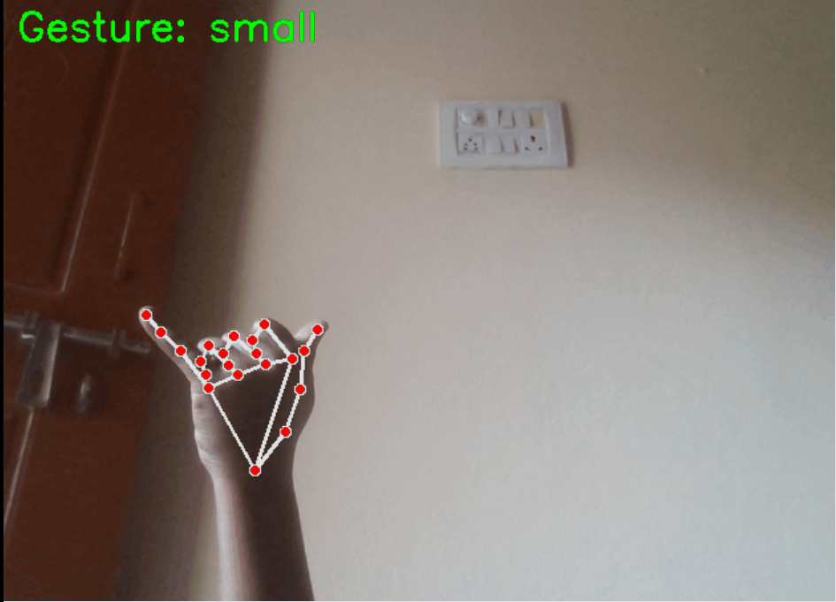

I build machine learning systems that perform reliably beyond controlled environments. Focused on real-world robustness, failure analysis, and distribution shift — not just high accuracy on test data.
Built and evaluated ML models on 22,000+ real-world samples across multiple conditions.

🚀 Featured Project
Built a real-time ML system and analyzed performance under distribution shift.
Impact:
Key Insight: Model errors were driven more by gesture similarity than environmental variation.
Most ML models fail silently in production — I build systems that expose those failures.
Automated secure server access and deployment workflows using SSH authentication and configuration management.
Tech: Linux, SSH, Ansible, Shell Scripting
Designed user-focused UI/UX prototypes to improve usability and user flow.
Tech: Figma, UI/UX Design
Programming: Python, SQL, C++, JavaScript
Machine Learning: Scikit-learn, TensorFlow, PyTorch, EDA, Model Evaluation
Computer Vision: OpenCV, MediaPipe
Tools: Git, GitHub, Linux, AWS (EC2, S3, RDS), Postman
Design: Figma, UI/UX
Email: saggurthisravani27@gmail.com
GitHub: https://github.com/sravani-engineer
LinkedIn: https://www.linkedin.com/in/sravani-saggurthi-3075ab238/